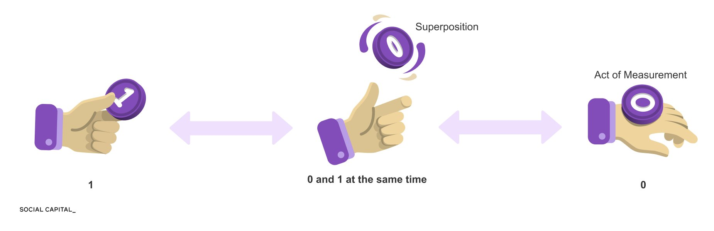
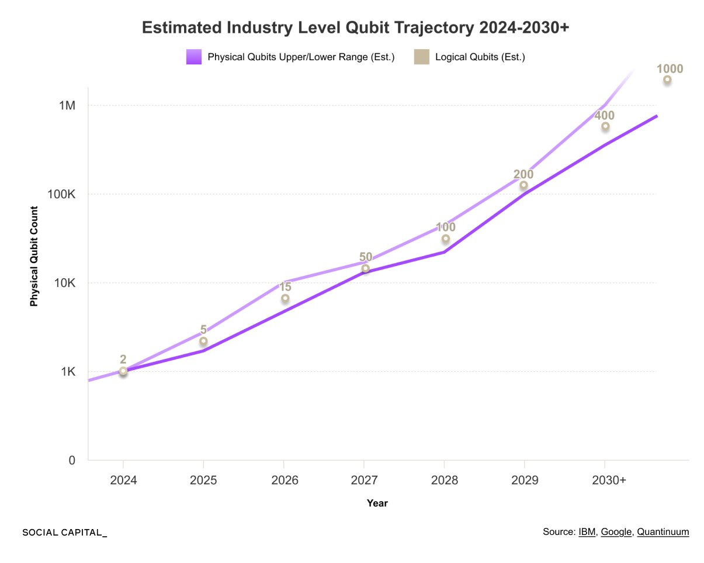

Quantum computing exploits quantum mechanical phenomena — superposition, entanglement, and interference — rather than classical binary logic. It sits between meaningful capability and hard limits: genuinely useful for specific problem classes, but far from the all-purpose threat to encryption that headlines suggest.
Classical computers process information using bits — binary switches that are either 0 or 1, implemented as transistors. Progress came for decades from shrinking transistors, following Moore's Law: transistor count roughly doubled every 2 years.
| Era | Chip | Transistors |
|---|---|---|
| 1971 | Intel 4004 | ~2,300 |
| 1979 | Motorola 68000 | ~68,000 |
| 1995 | AMD K5 | ~4.3M |
| 2004 | IBM PowerPC | ~58M |
| 2023 | Apple M2 Ultra | ~134B |
This trend is now hitting physics: as transistors shrink toward atomic scales, quantum tunneling causes electrons to leak through insulating barriers even when a transistor is meant to be "off." Quantum computing begins at this constraint — instead of fighting quantum effects, it exploits them.
Click a segment to explore the concept that makes quantum computing possible.
A classical bit is a coin lying flat — either heads (1) or tails (0). A qubit is like a coin spinning in the air: before it lands, it exists as a combination of both 0 and 1 simultaneously. The act of measurement collapses the superposition to a definite 0 or 1.
The superposition is not random indecision — it encodes probabilities over possible outcomes, which quantum operations can precisely manipulate.
When two qubits are entangled, measuring one instantly determines the state of the other, regardless of physical distance. This creates correlated computation that has no classical equivalent.
Quantum algorithms work by exploiting interference: quantum operations adjust the probabilities of different computational paths so that:

| Problem Domain | Quantum Algorithm | Speedup Type |
|---|---|---|
| Integer factoring (RSA) | Shor's Algorithm | Exponential |
| Unstructured search | Grover's Algorithm | Quadratic |
| Quantum system simulation | Variational methods | Exponential |
| Certain optimization problems | QAOA | Problem-dependent |
Modern RSA encryption relies on a mathematical asymmetry: multiplying two large primes is easy, but factoring the product is computationally intractable for classical computers. Shor's algorithm solves this efficiently on a quantum computer. However, breaking real RSA keys requires thousands to tens of thousands of logical qubits operating with very low error rates. No existing system is anywhere near this.
| Year | Physical Qubits (Est.) | Logical Qubits (Est.) |
|---|---|---|
| 2024 | ~1,000 | ~2 |
| 2025 | ~2,000 | ~5 |
| 2026 | ~7,000 | ~15 |
| 2027 | ~12,000 | ~50 |
| 2028 | ~30,000 | ~100 |
| 2029 | ~100,000 | ~200 |
| 2030+ | ~1,000,000 | ~1,000 |
Breaking RSA-2048 requires ~4,000 logical qubits at low error rates. At the current trajectory, that's likely beyond this decade even under optimistic projections.

Before fault-tolerant quantum computing is achievable, Noisy Intermediate-Scale Quantum (NISQ) devices are being explored for:
The most credible near-term value is quantum chemistry, where even small quantum advantages could unlock breakthrough drug candidates or novel materials.
| Timeframe | What's Plausible |
|---|---|
| Now – 2027 | NISQ experiments; quantum chemistry research; no cryptographic threat |
| 2028–2032 | Early fault-tolerant demonstrations; first practical chemistry applications |
| 2030s | Potential first meaningful quantum advantage for specific scientific problems |
| 2040s+ | Cryptographically relevant attacks become technically feasible (with extensive hardware investment) |
Regardless of timeline, the cryptographic risk is motivating a transition to post-quantum cryptography (PQC) — algorithms designed to be hard for quantum computers to break. NIST standardized several PQC algorithms in 2024 (CRYSTALS-Kyber, CRYSTALS-Dilithium, SPHINCS+). Organizations with long-lived sensitive data should begin migration now — data harvested today could be decrypted later when quantum hardware matures ("harvest now, decrypt later").